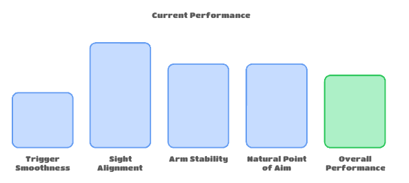
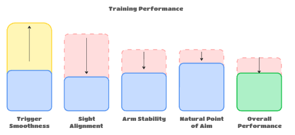
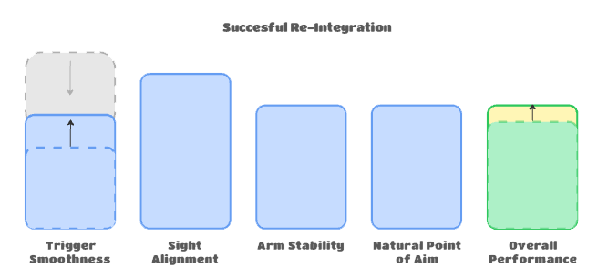

Non-Linear Skill Development
A concept I use to help conceptualize the complex nature of skill development.
Training effectively is about maximizing the gains from the time and energy you put into training. Having ways to conceptualize how your training is affecting your performance is very useful.
Here is a concept which I use often in my training, and which I use to help explain the process of isolating specific skills in order to improve your overall performance. The main goal of this concept is to take a holistic view of training, understanding the impact that isolation has on performance while you are focusing on skill development, and how that isolated skill then gets re-integrated into your overall skillset.
The Non-Linear Skill Development Concept
Imagine that your shooting technique is broken up into a number of skills, and that each skill is at a certain level. All of those skills add up to your current overall performance at the sport.

When you intentionally focus on improving a specific skill, what happens? Your performance at that skill should increase, because you’re dedicating concentration and effort into improving it.
However, if you are putting a large amount of effort into improving that specific skill, your overall performance will actually decrease during training. Why? Because by diverting your attention to work on that specific skill you will naturally take away from other aspects of your technique.

However, your goal when training isn’t to always perform your best, it’s to improve your performance, so the temporary hit to your overall performance is more than acceptable.
In order to train effectively, you must understand this give-and-take nature of skill development. Expecting your results to improve when you’re focusing on improving is not only unrealistic, but also will distract you from truly focusing on your training. You must give yourself permission to fail.
Drilling specific techniques in isolation is a staple of basically every sport, but shooting is uniquely different in that rather than having multiple skills that are used at various times in the sport (Basketball for example has dribbling, shooting, running, and passing), shooting essentially has multiple skills that all come together in a single, continuous action. In addition, every shot taken is quantifiable by its score, which has a significant impact on how you judge and approach your training that doesn't happen nearly as explicitly in other sports.
When you’re focusing your training on a specific skill, you must accept the inevitable drop in performance (ie. score). The alternative is, you try to keep your overall performance high while also making small enough adjustments to your technique to improve little by little. This ‘alternate’ approach is very common. It feeds into human loss-averse nature, but it is not an efficient use of time and effort.
The final stage of this concept is re-integration.
After dedicating time and effort to that specific focus, this improved performance at that specific skill will be integrated at a subconscious level. When you stop focusing on that skill, your performance at the specific skill will naturally decrease, but the overall level will be higher than it was originally.

This re-integration can actually be quite tricky, because when you stop focusing specifically on that skill and you return to an overall-performance-based mindset, it’s very easy to fall into old habits and revert to the previous way you executed your skill. Take special care to reinforce your skill training by using your updated skill, and avoid the temptation to return to your previous comfort zone. Otherwise, you may have spent all that effort training the skill just to discard it at the end.
If you find that you are struggling to integrate your training into your overall performance, this is a sign that you have not spent long enough, and you haven’t trained the skill to a sufficiently subconscious level. In this case, it’s best to postpone re-integration and continue to focus on isolation training for a little longer.
With re-integration complete, the rest of your skills will remain roughly at the same level that they were before. With your attention now back to maximizing your overall performance, the main difference will be that you have improved the innate level of that specific skill. The aggregate sum of all your skills will result in a higher overall performance.
Then it’s a matter of starting the process over again with another skill. Dedicated training in this manner will inevitably bring about constant, steady progress.
Action
End with a simple action or practice recommendation. Make it easy for the reader to apply the idea immediately.